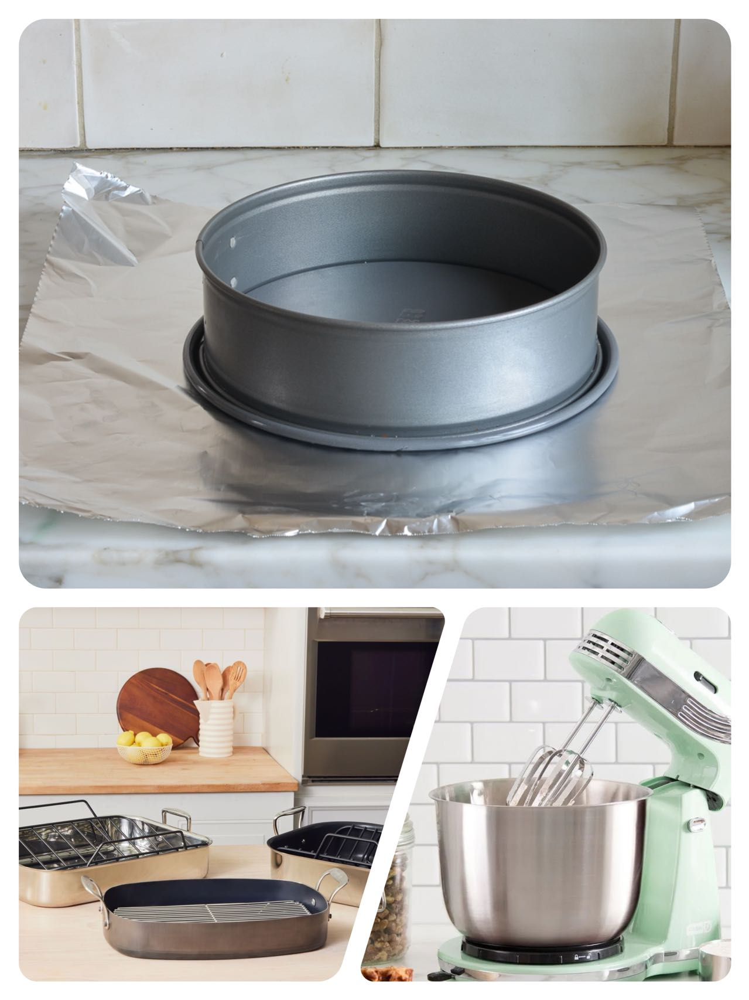
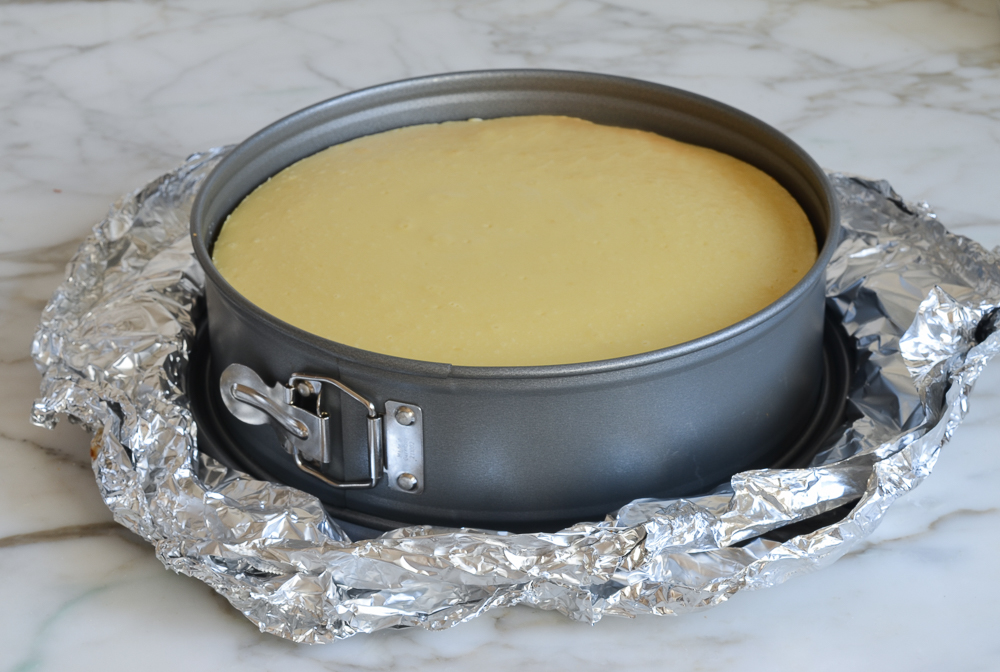

Classic New York Cheesecake

"Think making cheesecake is a challenge? Think again! This foolproof recipe delivers a cheesecake so dense, rich, and creamy, it rivals those from New York’s most beloved deliscious and it’s easy enough for beginners to master."
Now, I know that making cheesecake can seem a little intimidating. It’s a custard dessert that requires careful baking in a water bath to prevent cracking and achieve the perfect consistency. But don’t let that daunt you. With a few pointers and a tried-and-true recipe, which I’m happy to share with you, even beginners can whip up a dense, rich, creamy (and crack-free) cheesecake. This is a tradition-worthy dessert that rivals the best NY delicatessens. Who knows, maybe it will even help you win over someone special!
What You’ll Need To Make A Classic New York Cheesecake
Ingredient
- A buttery graham cracker crust
- Four 8-ounce bricks of full-fat cream cheese
- Three eggs
- Sugar
- One cup of our cream
- One teaspoon of vanilla
- One lemon
- One teaspoon of salt
- A few tablespoons of flour
Cream cheese is the key ingredient, so I recommend using a good brand, like Philadelphia. Moreover, flour might seem like an unusual addition—not all cheesecake recipes incorporate it—but it’s the secret to success. A little starch helps prevent the cake from cracking and also makes the filling lighter and fluffier.
Key Equipment
You’ll need a 9 or 10-inch springform pan and 18-inch heavy-duty aluminum foil. The springform pan features sides that can be removed from the base, so you can release the cake easily without having to flip the whole pan over (this would be a disaster with cheesecake). Springform pans, however, are notorious for leaking. Since the cheesecake bakes in a water bath, the foil prevents the water from seeping in during baking.
You will also need an electric mixer for whipping up the batter and a large roasting pan for the water bath.

Step-by-Step Instructions
- Preheat the Oven and Prep the Pan
- Make the Graham Cracker Crust
- Make the Cheesecake Batter
- Bake
- Cool
Step 1: Preheat the Oven and Prep the Pan
Preheat the oven to 375°F.
Wrap the springform pan with one large piece of heavy-duty aluminum foil, covering the underside of the pan and extending all the way to the top. Repeat with another sheet of foil for insurance. Spray the inside of the pan with nonstick cooking spray.
Step 2: Make the Graham Cracker Crust
In a medium bowl, combine the graham cracker crumbs, melted butter, sugar, and salt.
Flour might seem like an unusual addition—not all cheesecake recipes incorporate it—but it’s the secret to success. A little starch helps prevent the cake from cracking and also makes the filling lighter and fluffier.
Stir until well combined.
Press the crumbs into an even layer on the bottom of the prepared pan.
Bake the crust for 10 minutes, until set. Remove the pan from the oven and set aside. Reduce the oven temperature to 325°F.
Step 3: Make the Cheesecake Batter
In the bowl of an electric mixer fitted with the paddle attachment or beaters, combine the cream cheese, sugar, and flour.
Beat on medium speed until just smooth, about 1 minute. Scrape the bottom and sides of the bowl to be sure the mixture is evenly combined.
Add the vanilla, lemon zest, lemon juice, and salt; beat on low speed until just combined.
Add the eggs, one at a time, mixing on low speed until incorporated, scraping the bowl as necessary. Mix in the sour cream.
Pour the batter evenly into the springform pan.
Step 4: Bake
Set the unbaked cheesecake in a large roastin gpan. Pour boiling water into the roasting pan until it comes about one inch up the side of the cake pan. The water bath (also called a bain marie) regulates the temperature and keeps the cheesecake baking at an even, low heat. The steam/humidity created by the water bath also protects the cheesecake from drying out and cracking.
Set the unbaked cheesecake in a large roasting
pan. Pour boiling water into the roasting
pan until it comes about one inch up the
side of the cake pan. The water bath
(also called a bain marie) regulates
the temperature and keeps the
cheesecake baking at an even,
low heat. The steam/humidity
created by the water bath
also protects the cheesecake
from drying out and cracking.
Bake until
the cake is just
set, 1 hour and 30
minutes to 1 hour and
45 minutes. The cake
should not look liquidy at
all but will wobble just a bit
when the pan is nudged; it
will continue to cook as it
cools.
Bake until the cake is just set, 1 hour and 30 minutes to 1 hour and 45 minutes. The cake should not look liquidy at all but will wobble just a bit when the pan is nudged; it will continue to cook as it cools.
Step 5: Cool

Carefully remove the roasting pan from the oven and set it on a wire rack. Cool the cheesecake in the water bath until the water is just warm, about 45 minutes. Remove the springform pan from the water bath, discard the foil, and transfer the cheesecake to the refrigerator to cool for at least 8 hours or overnight.
Remove the sides of the springform pan. You can serve the cheesecake right from the base of the springform pan. Or, if you’d like to transfer it to a serving platter, run a long, thin spatula between the crust and the pan bottom, and then use two large spatulas to transfer the cheesecake to a serving dish. Slice with a sharp knife, wiping the knife clean between slices. Serve with berry sauce, if you like.